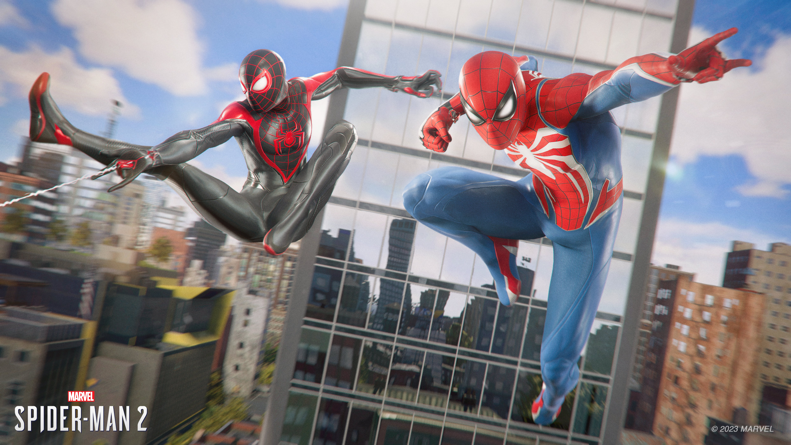

Swing back to: SiteName.com
Insomniac's Best Tale Yet
With Marvel’s Spider-Man 2, Insomniac has the unenviable task of following up two riveting superhero fantasies full of excitement and heart. While that may sound like a good problem to have, the question becomes where do you go from there? Well, its answer is to double down. Double down on Spider-Men. Double down on the size of the map. Double down on explosive action sequences. In doing so, the studio has crafted another consistently exciting rollercoaster ride and the best story of the series yet – but stand the original alongside this sequel in other ways, and it can look a bit like two Spider-Man games pointing at each other.
The excellent combat hasn’t gotten old, but it is largely the same fun as before, and despite that larger map, most of the open-world activities found within it are in desperate need of evolution. The result is a blockbuster in the most modern sense of the word: undeniably thrilling for long stretches, but by the numbers for others.

Combat System
Despite a couple of new tricks up its sleeve, Spider-Man 2’s combat is very familiar – it doesn’t have that new suit smell anymore, but it still feels incredibly comfy to slip back into. The rhythm of precision dodges, the new perfect parries (so you’re not only swerving and striking now), and acrobatic finishers are hugely satisfying, as is chasing high-hit combos to keep the fight as stylish as possible. The movement is smooth and the hits are crunching, like some sort of peanut butter hybrid that every one of your foes is allergic to. Power and elegance are brought together in a brick-to-the-face ballet as enemies are thrown around like dolls, juggled in the air, slammed across concrete floors, and slung into each other like body-armoured bowling pins – but, naturally, never killed. Every bone in their body may be broken and every organ punctured, but of course, they'll somehow live to commit crimes again.
Overall, there’s slightly less emphasis on stealth encounters this time than in either Spider-Man or Miles Morales. As someone who found the stealth action of the previous games a little simplistic and routine, this new, louder approach is welcome. Naturally, there are story missions where Miles or Peter have to slink across ceilings and take out thugs who never look up, but Spider-Man 2 is much more eager for you to get into the action, with many abilities designed to let you group up enemies and then deal big damage to all of them at once, rather than spreading them out to pick them off one by one.
Once Parker dons the symbiote suit already shown off in trailers, the gooey, angry powers that come with it make a big impact, adding more of a brawler nature to fights and giving Peter a set of tools to match Miles’ satisfying electric abilities. They’re just as enjoyable, as it feels like the suit is trying to burst out of the rumbling DualSense controller in my hands. This aggressive style of play is rewarded, as the only way to heal is by building up your focus bar – filled by landing hits and timing perfect dodges – and is another way to make sure that exciting rhythm of combat is never lost.
A new personal favourite gadget called the Web Grabber – which pulls enemies in from a distance and makes them smack into one another – also playfully builds into this philosophy.
Significant improvements to enemy variety
One area that Insomniac has made improvements in is that Spider-Man 2 offers significantly more in the way of enemy variety, so you’ll no longer be battering the same five balaclava bullies with baseball bats. New factions and units, such as flamethrower-wielding cultists that keep you at a distance, flying drones, and hunters who deploy laser grids above your head to limit aerial attacks keep you on your sticky toes.
Certain enemies are weak to different types of abilities, such as electric or symbiote attacks, which also adds an enjoyable extra wrinkle to fights. It’s by no means revolutionary stuff, but a welcome added level of complexity that makes you consider which powers – or even which Spider-Man – are best for a given job. That's not to say there aren’t benefits to taking a sneaky route, though, especially when you’re playing as Miles and using his invisibility power to quietly take out enemies. There are many perch takedown possibilities offered and new toys to play with too, such as the Web Line, which allows you to create your own highwires over your enemies to prey on them from above.
The Ambience is as great as ever
In keeping with Insomniac’s track record, the music behind it all is stellar, with Miles' and Peter's respective signature tunes playing depending on who you're controlling. A highlight, though, is the theme that follows in Kraven's footsteps, which bears more than a passing resemblance to Howard Shore's Uruk-hai war march from The Lord of the Rings score. It soundtracks a world that looks stunning, even when played in performance mode at a stable 60fps as I did for most of my playthrough.
Verdict
As a sequel in a spectacular series, Marvel’s Spider-Man 2 is both blessed and cursed. Its story of two Spider-Men is a great time and a Spidey fan’s dream to play through as comic book pages are brought to life, elegantly walking the tightrope between light humour and heavier themes. Meanwhile, Insomniac refines a successful formula of combat and web-swinging without revolutionising either in major ways, making them comfy and familiar with just enough new tweaks and abilities to elevate them to fun new heights. The part that feels like it actually needed a radical rethinking is the open world of New York City, which has been made bigger but not better, with an exhausting checklist of mostly repetitious side activities.